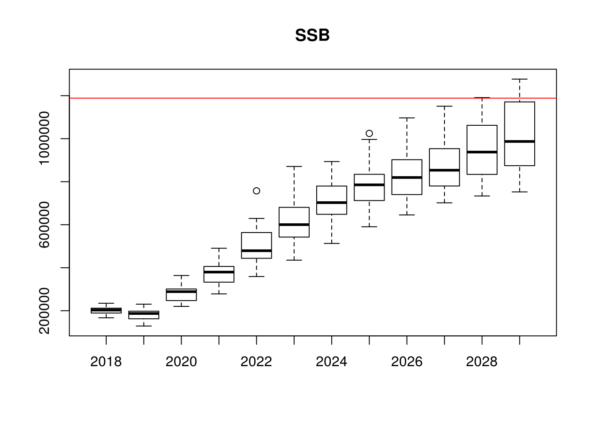
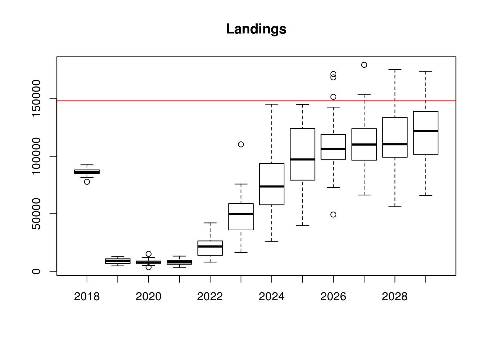

An introduction to MSE with FLR
15 September, 2017
Management Strategy Evaluation (MSE) is a framework for evaluating the performance of Harvest Control Rules (HCRs) against prevailing uncertainties (Punt et al. 2016). This tutorial introduces the basic steps for building a single-species MSE: conditioning the operating model, setting up the observation error model, constructing a simple model-based HCR (based on the ICES MSY approach), performing the MSE simulations (including feedback), and producing performance statistics.
Required packages
To follow this tutorial you should have installed the following packages:
You can do so as follows,
install.packages(c("ggplot2"))
install.packages(c("FLa4a","FLash","FLXSA","FLBRP","ggplotFL"), repos="http://flr-project.org/R")# Loads all necessary packages
library(FLa4a)
library(FLash)
library(FLXSA)
library(FLBRP)
library(ggplotFL)CONDITIONING THE OPERATING MODEL
Conditioning the operating model is a key step in building an MSE analysis, as it allows operating models to be considered “plausible” in the sense that they are consistent with observed data. In this tutorial, the a4a assessment model is fitted to the data within the ple4 FLStock and ple4.index FLIndex objects to produce stk, the operating model FLStock object. An mcmc method within the a4a assessment is used to obtain parameter uncertainty, reflected in the iter dimension of stk.
Read in stock assessment data
data(ple4)
data(ple4.index)
stk <- ple4
idx <- FLIndices(idx=ple4.index)Set up the iteration and projection window parameters
In this tutorial, 20 iterations are used along with a 12-year projection window. A 3-year period is used for to calculate averages needed for projections (e.g. mean weights, etc.).
it <- 20 # iterations
y0 <- range(stk)["minyear"] # initial data year
dy <- range(stk)["maxyear"] # final data year
iy <- dy+1 # initial year of projection (also intermediate year)
ny <- 12 # number of years to project from intial year
fy <- dy+ny # final year
nsqy <- 3 # number of years to compute status quo metricsFit stock assessment model a4a
Set up the operating model (including parameter uncertainty) based on fitting the a4a assessment model to data. Reference points are obtained for a “median” stk (stk0) to mimic best estimates of reference points used in the ICES MSY approach.
# Set up the catchability submodel with a smoothing spline
# (setting up a 'list' allows for more than one index)
qmod <- list(~s(age, k=6))
# Set up the fishing mortality submodel as a tensor spline,
# which allows age and year to interact
fmod <- ~te(replace(age, age>9,9), year, k=c(6,8))
# Set up the MCMC parameters
mcsave <- 100
mcmc <- it * mcsave
# Fit the model
fit <- a4aSCA(stk, idx, fmodel = fmod, qmodel = qmod, fit = "MCMC",
mcmc = SCAMCMC(mcmc = mcmc, mcsave = mcsave, mcprobe = 0.4))
# Update the FLStock object
stk <- stk + fit
# Reduce to keep one iteration only for reference points
stk0 <- qapply(stk, iterMedians)Fit stock-recruit model
A Beverton-Holt stock-recruit model is fitted for each iteration, with residuals generated for the projection window based on the residuals from the historic period. A stock-recruit model is also fitted to the “median” stk for reference points.
# Fit the stock-recruit model
srbh <- fmle(as.FLSR(stk, model="bevholt"), method="L-BFGS-B",
lower=c(1e-6, 1e-6), upper=c(max(rec(stk)) * 3, Inf))
srbh0 <- fmle(as.FLSR(stk0, model="bevholt"), method="L-BFGS-B",
lower=c(1e-6, 1e-6), upper=c(max(rec(stk)) * 3, Inf))
# Generate stock-recruit residuals for the projection period
srbh.res <- rnorm(it, FLQuant(0, dimnames=list(year=iy:fy)), mean(c(apply(residuals(srbh), 6, sd))))Calculate reference points and set up the operating model for the projection window
Reference points based on the “median” stk, assuming (for illustrative purposes only) that Bpa=0.5Bmsy and Blim=Bpa/1.4. The stf method is applied to the operating model stk object in order to have the necessary data (mean weights, etc.) for the projection window.
# Calculate the reference points
brp <- brp(FLBRP(stk0, srbh0))
Fmsy <- c(refpts(brp)["msy","harvest"])
msy <- c(refpts(brp)["msy","yield"])
Bmsy <- c(refpts(brp)["msy","ssb"])
Bpa <- 0.5*Bmsy
Blim <- Bpa/1.4
# Prepare the FLStock object for projections
stk <- stf(stk, fy-dy, nsqy, nsqy)SET UP OBSERVATION ERROR MODEL ELEMENTS
Estimate the index catchabilities from the a4a fit (without simulation)
Observation error is introduced through the index catchability-at-age
# Set up the FLIndices object and populate it
# (note, FLIndices potentially has more than one index, hence the for loop)
idcs <- FLIndices()
for (i in 1:length(idx)){
# Set up FLQuants and calculate mean and sd for catchability
lst <- mcf(list(index(idx[[i]]), stock.n(stk0))) # make FLQuants same dimensions
idx.lq <- log(lst[[1]]/lst[[2]]) # log catchability of index
idx.qmu <- idx.qsig <- stock.n(iter(stk,1)) # create quants
idx.qmu[] <- yearMeans(idx.lq) # allocate same mean-at-age to every year
idx.qsig[] <- sqrt(yearVars(idx.lq)) # allocate same sd-at-age to every year
# Build index catchability based on lognormal distribution with mean and sd calculated above
idx.q <- rlnorm(it, idx.qmu, idx.qsig)
idx_temp <- idx.q * stock.n(stk)
idx_temp <- FLIndex(index=idx_temp, index.q=idx.q) # generate initial index
range(idx_temp)[c("startf", "endf")] <- c(0, 0) # timing of index (as proportion of year)
idcs[[i]] <- idx_temp
}
names(idcs) <- names(idx)
idx<-idcs[1]SET UP MSE LOOP
Needed Functions
Observation error model
In this tutorial, observation error is applied to the operating model population numbers to obtain an index of abundance. This is implemented through the index catchability-at-age. Observation error is added during each year of the projection window, and is therefore dealt with more easily in a function.
o <- function(stk, idx, assessmentYear, dataYears) {
# dataYears is a position vector, not the years themselves
stk.tmp <- stk[, dataYears]
# add small amount to avoid zeros
catch.n(stk.tmp) <- catch.n(stk.tmp) + 0.1
# Generate the indices - just data years
idx.tmp <- lapply(idx, function(x) x[,dataYears])
# Generate observed index
for (i in 1:length(idx)) index(idx[[i]])[, assessmentYear] <-
stock.n(stk)[, assessmentYear]*index.q(idx[[i]])[, assessmentYear]
list(stk=stk.tmp, idx=idx.tmp, idx.om=idx)
}XSA assessment model
The assessment model used to parameterise the HCR is XSA, through FLXSA. This function sets the control parameters for FLXSA and fits the assessment.
xsa <- function(stk, idx){
# Set up XSA settings
control <- FLXSA.control(tol = 1e-09, maxit=99, min.nse=0.3, fse=2.0,
rage = -1, qage = range(stk)["max"]-1, shk.n = TRUE, shk.f = TRUE,
shk.yrs = 5, shk.ages= 5, window = 100, tsrange = 99, tspower = 0)
# Fit XSA
fit <- FLXSA(stk, idx, control)
# convergence diagnostic (quick and dirty)
maxit <- c("maxit" = fit@control@maxit)
# Update stk
stk <- transform(stk, harvest = harvest(fit), stock.n = stock.n(fit))
return(list(stk = stk, converge = maxit))
}Control object for projections
The fwd method from FLash needs a control object, which is set by this function.
getCtrl <- function(values, quantity, years, it){
dnms <- list(iter=1:it, year=years, c("min", "val", "max"))
arr0 <- array(NA, dimnames=dnms, dim=unlist(lapply(dnms, length)))
arr0[,,"val"] <- unlist(values)
arr0 <- aperm(arr0, c(2,3,1))
ctrl <- fwdControl(data.frame(year=years, quantity=quantity, val=NA))
ctrl@trgtArray <- arr0
ctrl
}MSE initialisation
The first year of the projection window is the intermediate year, for which, following the ICES WG timeline, already has a TAC. For this tutorial, the TAC in the final year of data is assumed to be the realised catch in stk for the same year, while the TAC in the intermediate year is set equal to the TAC in the final year of data. The stk object then needs to be projected through the intermediate year by applying the TAC in the intermediate year with fwd.
vy <- ac(iy:fy)
TAC <- FLQuant(NA, dimnames=list(TAC="all", year=c(dy,vy), iter=1:it))
TAC[,ac(dy)] <- catch(stk)[,ac(dy)]
TAC[,ac(iy)] <- TAC[,ac(dy)] #assume same TAC in the first intermediate year
ctrl <- getCtrl(c(TAC[,ac(iy)]), "catch", iy, it)
# Set up the operating model FLStock object
stk.om <- fwd(stk, control=ctrl, sr=srbh, sr.residuals = exp(srbh.res), sr.residuals.mult = TRUE)Start the MSE loop
The MSE loop requires the following:
- observation error model to be applied to generate the index of abundance,
- the stock assessment (XSA) to be applied using this index to generate the management procedure stock object
stk.mp, - the resultant SSB estimate to be used in the HCR, along with the reference points obtained earlier, to derive target Fs for the TAC year (the year after the intermediate year), and
- the TAC associated with the target F to be calculated by applying
fwdto thestk.mp.
The final step of the MSE loop is to apply the TAC to the operating model stock object, stk.om, by using fwd.
set.seed(231) # set seed to ensure comparability between different runs
for(i in vy[-length(vy)]){
# set up simulations parameters
ay <- an(i)
cat(i, " > ")
flush.console()
vy0 <- 1:(ay-y0) # data years (positions vector) - one less than current year
sqy <- (ay-y0-nsqy+1):(ay-y0) # status quo years (positions vector) - one less than current year
# apply observation error
oem <- o(stk.om, idx, i, vy0)
stk.mp <- oem$stk
idx.mp <- oem$idx
idx <- oem$idx.om
# perform assessment
out.assess <- xsa(stk.mp, idx.mp)
stk.mp <- out.assess$stk
# apply ICES MSY-like Rule to obtain Ftrgt
# (note this is not the ICES MSY rule, but is similar)
flag <- ssb(stk.mp)[,ac(ay-1)]<Bpa
Ftrgt <- ifelse(flag,ssb(stk.mp)[,ac(ay-1)]*Fmsy/Bpa,Fmsy)
# project the perceived stock to get the TAC for ay+1
fsq.mp <- yearMeans(fbar(stk.mp)[,sqy]) # Use status quo years defined above
ctrl <- getCtrl(c(fsq.mp, Ftrgt), "f", c(ay, ay+1), it)
stk.mp <- stf(stk.mp, 2)
gmean_rec <- c(exp(yearMeans(log(rec(stk.mp)))))
stk.mp <- fwd(stk.mp, control=ctrl, sr=list(model="mean", params = FLPar(gmean_rec,iter=it)))
TAC[,ac(ay+1)] <- catch(stk.mp)[,ac(ay+1)]
# apply the TAC to the operating model stock
ctrl <- getCtrl(c(TAC[,ac(ay+1)]), "catch", ay+1, it)
stk.om <- fwd(stk.om, control=ctrl,sr=srbh, sr.residuals = exp(srbh.res), sr.residuals.mult = TRUE)
}PERFORMANCE STATISTICS
#Some example performance statstics, but first isolate the projection period
stk.tmp<-window(stk.om,start=iy)
# annual probability of being below Blim
(risky<-iterSums(ssb(stk.tmp)/Blim<1)/it)An object of class "FLQuant"
, , unit = unique, season = all, area = unique
year
age 2009 2010 2011 2012 2013
all 1.00 1.00 0.90 0.50 0.05
[ ... 2 years]
year
age 2016 2017 2018 2019 2020
all 0 0 0 0 0 # mean probabiity of being below Blim in the first half of the projection period
mean(risky[,1:trunc(length(risky)/2)])[1] 0.575# ...and second half
mean(risky[,(trunc(length(risky)/2)+1):length(risky)])[1] 0# plot of SSB relative to Bmsy
boxplot(data~year,data=as.data.frame(ssb(stk.tmp)),main="SSB")
abline(h=Bmsy,col="red")
# plot of landings relative to MSY yield
boxplot(data~year,data=as.data.frame(landings(stk.tmp)),main="Landings")
abline(h=msy,col="red")
plot(FLStocks(stk.om=stk.om, stk.mp=stk.mp)) + theme(legend.position="top") + geom_vline(aes(xintercept=2009))
Results for applying an ICES MSY-like rule, comparing the operating model to the management procedure
References
Punt, A.E., Butterworth, D.S., de Moor, C.L., De Oliveira, J.A.A. and M. Haddon (2016). Management Strategy Evaluation: Best Practices. Fish and Fisheries, 17(2): 303-334. DOI: 10.1111/faf.12104.
More information
- You can submit bug reports, questions or suggestions on this tutorial at https://github.com/flr/doc/issues.
- Or send a pull request to https://github.com/flr/doc/
- For more information on the FLR Project for Quantitative Fisheries Science in R, visit the FLR webpage, http://flr-project.org.
Software Versions
- R version 3.4.1 (2017-06-30)
- FLCore: 2.6.5
- ggplotFL: 2.6.1
- ggplot2: 2.2.1
- Compiled: Fri Sep 15 15:43:55 2017
License
This document is licensed under the Creative Commons Attribution-ShareAlike 4.0 International license.